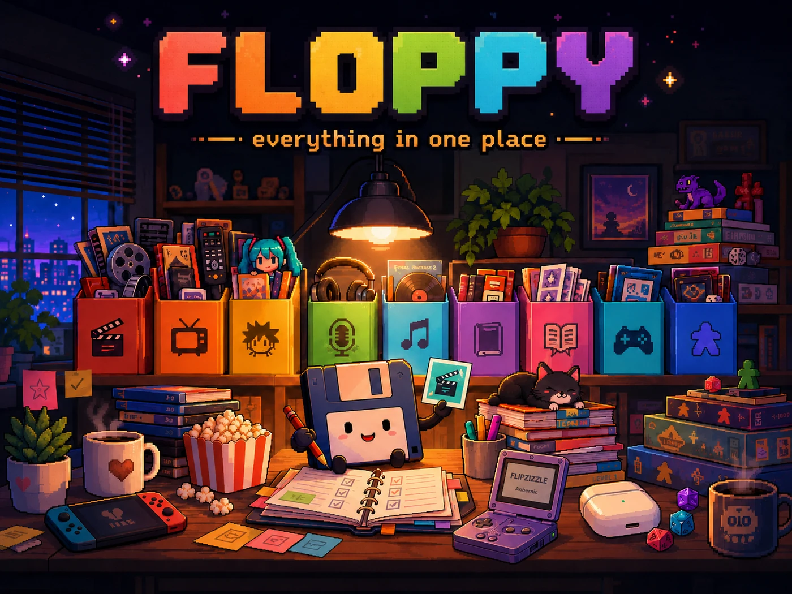

Track the whole shelf
Movies, television, anime, manga, books, comics, games, board games, music, and podcasts share one library and one history.
Self-hosted media tracking
Floppy is an all-in-one media tracker and personal media diary for everything you watch, read, play, or listen to—without handing your history to another subscription service.
Demo login: demo / demodemo
Why Floppy
Floppy brings the jobs of a watchlist, media diary, progress tracker, recap dashboard, and owned-media collection into one self-hosted home.
Movies, television, anime, manga, books, comics, games, board games, music, and podcasts share one library and one history.
Progress views, time-left data, unified history, statistics, public lists, and recommendations make the collection useful every day.
Run it in Docker, keep the database on your own hardware, connect the services you already use, and export your data whenever you need it.

Building an integration?
Floppy started as a Yamtrack fork and has diverged substantially. Integrations intended for Floppy should target this repository, its REST API at /api/v1, and the ghcr.io/dannyvfilms/floppy image.